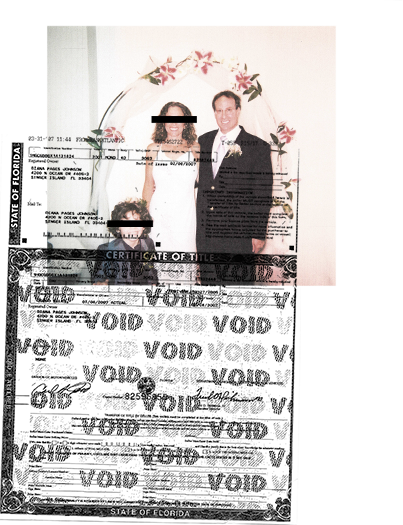
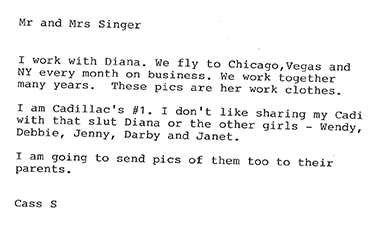
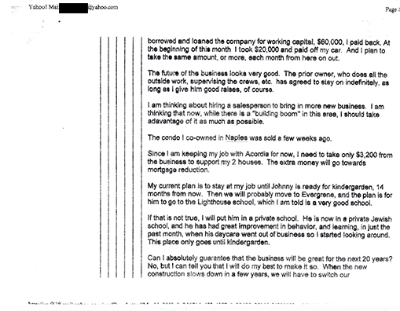

10a.
10b.
10c.

1. RUSSIA
The film opens with Paul describing 40th birthday. He is living in California,
working a boring desk job, alone and without much of a social life. He receives
a catalog for a Russian Brides matchmaking service, and though he scoffs at first,
it piques his interest. As he tells the story, we cut to re-enactment clips of the
scenes as he described them later in his book and screenplay. Paul plays himself
and actors play the other characters.
We flash forward a few months: Paul is on a plane to Moscow to meet Svetlana,
a woman he has been in contact with. In this opening sequence — through
interviews, book excerpts read by Paul, and reenactments, we get a sense of his
personality. He is exuberant, a man of extremes. Once he has set his sites on
something, he cannot be stopped. He many also be a tad short-sighted and naïve
in his pursuits. He heads to Russia convinced he will return with a loving bride —
and will finally be whole. Although the trip goes well at first, he gets a hint that
Svetlana’s motives may be suspect and it sours him on the whole relationship,
instantly. Again — a man of extremes. He returns to the agency, which sets him
up with the more modest Talia. They hit it off.
2. MARRIAGE TO TALIA
She returns to America and they wed and have a son. For the second time,
he feels secure in his bliss, the perfect life with the perfect family. But the
complications of people and relationships can only be swept aside for so long.
Talia grows distant and spends all of her time studying for medical school. Their
union dissolves and Paul is left with Johnny, his son. His new mission is clear
(in his words): He must find a “mommy” for Johnny. Paul’s ever-heightening goal
— the thing that once he achieves, all will be well — is what propels the film
and continues to evolve as circumstances change.
3. COURTSHIP OF AUDREY
Florida: A few years later. Paul is living in Florida with Johnny. He has bought a
home-painting business and runs it with his new best friend, Daniel. Paul meets
Audrey, a woman he met on a Jewish singles site. He is ever-determined to skip
past dating and establish his family, thinking things will finally be fine. Despite a
series of red flags, Paul proposes to Audrey a few months after they meet, having
only seen her a small handful of times. He is set in his vision of how his life will
go and again is making attempts to conform his reality to that vision. She is at this
point already exhibiting extremely bizarre behaviors — always on her phone and
hanging up abruptly when Paul enters the room, preoccupied with getting her
name on his assets, prone to rage, and so on. They have an extremely awkward
and memorable sexual encounter the night he proposes.

11a.
11b.
4. MARRIAGE & SEPARATIONS
The time before and around the wedding is marked but turbulence. They almost
break up over sharing assets and there is a period of months in which they do not
speak. But Paul is determined to make it to the wedding — in hindsight, doing
much of Audrey’s con work for her. During the time, she only spends a few days a
week with Paul, telling him that she spends the rest of her time looking after her
sick grandmother a few hours away. They marry and he is in a temporary bliss —
has he finally achieved what he’s looking for? It is short-lived.
She begins acting strange. She vanishes for most of a New Years’ eve. She tells
him his sex drive is abnormal and they attempt to set an acceptable schedule
for sex. As Paul digs deeper, the insane becomes the mundane. But things
continue to get worse. His friend and business partner, Daniel, disappears with
all of the money from their business. As a condition for returning from one of
their separations, Audrey asks Paul to send checks to an address to cover her
health insurance. Suspicious, he goes to the address – this is the first example
of Paul in “investigative” mode — and discovers it to be a trailer park, containing
a trailer she secretly owns.
He confronts her and they split.
5. POST-MARRIAGE: THE SEARCH FOR THE TRUTH
Looking for answers, Paul sees a pet psychic named Terry. She sets
him on a mission to dig into Audrey’s past.
This section of the film is an avalanche of revelations. As Paul digs through
bank statements, hacked emails, even garbage bags — he pieces together Audrey’s
secret double life as a con artist, madam, and prostitute of a multi-state call girl
ring. She seems to be in a long-term relationship with her boyfriend and pimp,
a man Paul calls “Royce Rocco”. He hires PIs to tail her and finds her picking up
tricks and meeting her girls.
He approaches law enforcement: Cops. FBI. The press. When no one responds,
he becomes convinced of potential corruption in the department. As Paul digs
deeper, he is in this section evolving the vision of himself from “Dad” / family
man to a crime fighting crusader.
In this section we also investigate Paul’s decision to begin compiling his story
into a book, and even potentially a film. As he is on his mission, he is also
obsessively documenting it and planning for a future in which he gets to tell
his story to the world.
12a.

6. THE INTERNET
Paul writes a book called “Duplicity: A True Story of Crime And Deceit”. He
self-publishes it on Amazon. He produces videos and a newsletter called “The
Warrior”, in which he seeks to help other victimized people in relationships
empower themselves. This is the fight sign of Paul acting for the benefit of others
in what may or may not be an attempt to promote himself and his story. He starts
a twitter account and tweets endlessly. He also writes a screenplay version of the
story (from which we have earlier depicted scenes), hoping that it can become a
blockbuster. He tweets at people who work in Entertainment.
We show a scene from the end of his screenplay: Audrey and Royce are laughing
about Paul when they are suddenly murdered by higher-ups in the mob.
In an interview, Paul admits that this did not happen, and perhaps why he felt it
necessary to include. This takes us to:
7. THE CHRONICLES, VINDICATION AND BEYOND
Paul had attempted for years to make his story national news. But no one
listened, and no one really cared. So he decided to change tack. He pulled down
the website and deleted his tweets. He released a video on YouTube as a new
character — Ryan Sinclair, a fan of Paul Goldman’s. He writes “The Paul T Goldman
Chronicles”, a series of e-books self-published on Amazon in which he tells the
further adventures of Paul T Goldman, now running around Europe trying to break
up international sex trafficking rings.
We begin to show pivotal scenes from the Chronicles. Paul and Johnny are
kidnapped after Audrey’s funeral. They are freed by a mysterious man who
sets Paul on his mission. We will depict a few action scenes — gripping,
edge-of-your-seat action scenes made all the more compelling by the fact that
we know the author is a man writing heroic “fan-fic” about his own life. This
culminates in a scene where Paul has crash-landed in Moscow and seeks refuge
with Svetlana — the real woman who rejected him many years ago. In this world,
they kiss in the rain and she tells him she always loved him. He is writing himself
the perfect closure for the events in his life he could not control. We will intercut
these action scenes with documentary footage and depict out the reality
of his day-to-day life.
He promotes these books through the website StopChildSexTrafficking.org —
a topic that has very little to do with his original intention of revenge on his ex.
He tweets hundreds of times a day and counts among his “allies” celebrities
that have spoken out against sex trafficking.
As Paul went deeper into this new mission, his plans expanded. Sequels became
more and more outlandish. There would be a series of kid detective stories called “The Johnny Goldman Chronicles”. There would even be a cartoon starring their
dog. And the question arises — what is now driving Paul T Goldman? The desire
for justice and to strike down sex trafficking? Or does he just want to be famous?
The climax of the film intercuts dramatizes scenes from his “Paul T Goldman
Chronicles” with his more mundane real life, and increasingly heightened (and
more and more successful) quest to be heard. We show more and more “behind
the scenes” of Paul orchestrating the cinematic telling of his story and examine
not only the blurring lines between fantasy and reality, but whether or not that
distinction really even matters anymore.
Has he found what he’s looking for? Can he ever?
By the film’s end, the viewer’s act of watching it, in providing an audience for
Paul, has actually become part of his story. Paul has gone from being a silly man,
to a perhaps crazy man — to something much richer: A product of the modern age
who has come to look at an unfortunate situation in his life as an “in” to being heard/validated/famous… and it’s working.
13a.
